Metascape Gene List Analysis Report
metascape.org1
Bar Graph Summary
Figure 1. Bar graph of enriched terms across input gene lists, colored by p-values.
|
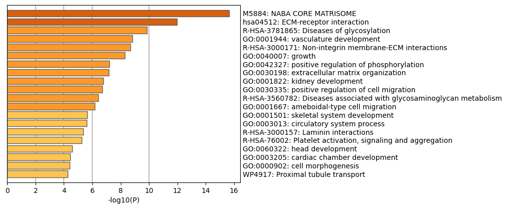
|

|
Metascape only visualizes the top 20 clusters. Up to 100 enriched clusters can be viewed here.
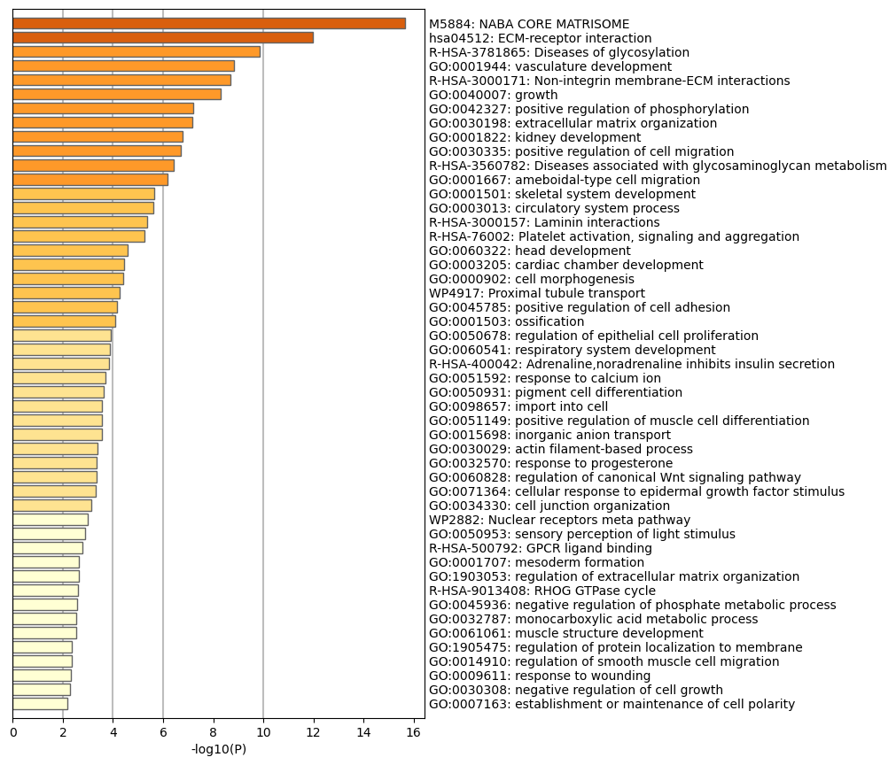
|
The top-level Gene Ontology biological processes can be viewed here.
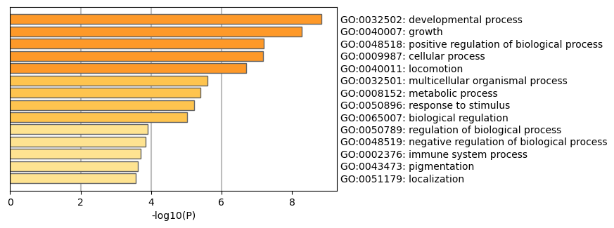
|
Gene Lists
User-provided gene identifiers are first converted into their corresponding H. sapiens Entrez gene IDs using the latest version of the database (last updated on 2024-05-01). If multiple identifiers correspond to the same Entrez gene ID, they will be considered as a single Entrez gene ID in downstream analyses. The gene lists are summarized in Table 1.
Table 1. Statistics of input gene lists.
| Name |
Total |
Unique |
| MyList |
112 |
110 |
Gene Annotation
The following are the list of annotations retrieved from the latest version of the database (last updated on 2024-05-01) (Table 2).
Table 2. Gene annotations extracted
| Name |
Type |
Description |
| Gene Symbol |
Description |
Primary HUGO gene symbol. |
| Description |
Description |
Short description. |
| Biological Process (GO) |
Function/Location |
Descriptions summarized based on gene ontology database, where up to three most informative GO terms are kept. |
| Kinase Class (UniProt) |
Function/Location |
Detailed kinase classes. |
| Protein Function (Protein Atlas) |
Function/Location |
Protein Function (Protein Atlas) |
| Subcellular Location (Protein Atlas) |
Function/Location |
Subcellular Location (Protein Atlas) |
| Drug (DrugBank) |
Genotype/Phenotype/Disease |
Drug information for the given gene as target. |
| Protein Functions (ChatGPT) |
Description |
Uncurated gene functions described by ChatGPT. |
| Disease & Drugs (ChatGPT) |
Genotype/Phenotype/Disease |
Uncurated disease and drug associations described by ChatGPT. |
| Canonical Pathways
|
Ontology |
Canonical Pathways
|
| Hallmark Gene Sets
|
Ontology |
Hallmark Gene Sets
|
Pathway and Process Enrichment Analysis
For each given gene list, pathway and process enrichment analysis have been carried out with the following ontology sources: KEGG Pathway, GO Biological Processes, Reactome Gene Sets, Canonical Pathways, CORUM, WikiPathways, and PANTHER Pathway. All genes in the genome have been used as the enrichment background. Terms with a p-value < 0.01, a minimum count of 3, and an enrichment factor > 1.5 (the enrichment factor is the ratio between the observed counts and the counts expected by chance) are collected and grouped into clusters based on their membership similarities. More specifically, p-values are calculated based on the cumulative hypergeometric distribution
2, and q-values are calculated using the Benjamini-Hochberg procedure to account for multiple testings
3. Kappa scores
4 are used as the similarity metric when performing hierarchical clustering on the enriched terms, and sub-trees with a similarity of > 0.3 are considered a cluster. The most statistically significant term within a cluster is chosen to represent the cluster.
Table 3. Top 20 clusters with their representative enriched terms (one per cluster). "Count" is the number of genes in the user-provided lists with membership in the given ontology term. "%" is the percentage of all of the user-provided genes that are found in the given ontology term (only input genes with at least one ontology term annotation are included in the calculation). "Log10(P)" is the p-value in log base 10. "Log10(q)" is the multi-test adjusted p-value in log base 10.
| GO |
Category |
Description |
Count |
% |
Log10(P) |
Log10(q) |
| M5884 |
Canonical Pathways |
NABA CORE MATRISOME |
17 |
15.45 |
-15.67 |
-11.32 |
| hsa04512 |
KEGG Pathway |
ECM-receptor interaction |
10 |
9.09 |
-11.98 |
-8.11 |
| R-HSA-3781865 |
Reactome Gene Sets |
Diseases of glycosylation |
10 |
9.09 |
-9.87 |
-6.22 |
| GO:0001944 |
GO Biological Processes |
vasculature development |
15 |
13.64 |
-8.85 |
-5.40 |
| R-HSA-3000171 |
Reactome Gene Sets |
Non-integrin membrane-ECM interactions |
7 |
6.36 |
-8.70 |
-5.35 |
| GO:0040007 |
GO Biological Processes |
growth |
13 |
11.82 |
-8.29 |
-5.06 |
| GO:0042327 |
GO Biological Processes |
positive regulation of phosphorylation |
14 |
12.73 |
-7.20 |
-4.11 |
| GO:0030198 |
GO Biological Processes |
extracellular matrix organization |
10 |
9.09 |
-7.18 |
-4.11 |
| GO:0001822 |
GO Biological Processes |
kidney development |
10 |
9.09 |
-6.77 |
-3.76 |
| GO:0030335 |
GO Biological Processes |
positive regulation of cell migration |
13 |
11.82 |
-6.70 |
-3.76 |
| R-HSA-3560782 |
Reactome Gene Sets |
Diseases associated with glycosaminoglycan metabolism |
5 |
4.55 |
-6.41 |
-3.54 |
| GO:0001667 |
GO Biological Processes |
ameboidal-type cell migration |
8 |
7.27 |
-6.19 |
-3.39 |
| GO:0001501 |
GO Biological Processes |
skeletal system development |
11 |
10.00 |
-5.65 |
-2.93 |
| GO:0003013 |
GO Biological Processes |
circulatory system process |
11 |
10.00 |
-5.60 |
-2.89 |
| R-HSA-3000157 |
Reactome Gene Sets |
Laminin interactions |
4 |
3.64 |
-5.38 |
-2.72 |
| R-HSA-76002 |
Reactome Gene Sets |
Platelet activation, signaling and aggregation |
8 |
7.27 |
-5.26 |
-2.64 |
| GO:0060322 |
GO Biological Processes |
head development |
12 |
10.91 |
-4.57 |
-2.16 |
| GO:0003205 |
GO Biological Processes |
cardiac chamber development |
6 |
5.45 |
-4.45 |
-2.06 |
| GO:0000902 |
GO Biological Processes |
cell morphogenesis |
11 |
10.00 |
-4.41 |
-2.03 |
| WP4917 |
WikiPathways |
Proximal tubule transport |
4 |
3.64 |
-4.25 |
-1.93 |
To further capture the relationships between the terms, a subset of enriched terms has been selected and rendered as a network plot, where terms with a similarity > 0.3 are connected by edges. We select the terms with the best p-values from each of the 20 clusters, with the constraint that there are no more than 15 terms per cluster and no more than 250 terms in total. The network is visualized using
Cytoscape5, where each node represents an enriched term and is colored first by its cluster ID (Figure 2.a) and then by its p-value (Figure 2.b). These networks can be interactively viewed in Cytoscape through the .cys files (contained in the Zip package, which also contains a publication-quality version as a PDF) or within a browser by clicking on the web icon. For clarity, term labels are only shown for one term per cluster, so it is recommended to use Cytoscape or a browser to visualize the network in order to inspect all node labels. We can also export the network into a PDF file within Cytoscape, and then edit the labels using Adobe Illustrator for publication purposes. To switch off all labels, delete the "Label" mapping under the "Style" tab within Cytoscape, and then export the network view.
Figure 2. Network of enriched terms: (a) colored by cluster ID, where nodes that share the same cluster ID are typically close to each other; (b) colored by p-value, where terms containing more genes tend to have a more significant p-value.
Protein-protein Interaction Enrichment Analysis
For each given gene list, protein-protein interaction enrichment analysis has been carried out with the following databases: STRING
6, BioGrid
7, OmniPath
8, InWeb_IM
9.Only physical interactions in STRING (physical score > 0.132) and BioGrid are used (
details). The resultant network contains the subset of proteins that form physical interactions with at least one other member in the list. If the network contains between 3 and 500 proteins, the Molecular Complex Detection (MCODE) algorithm
10 has been applied to identify densely connected network components. The MCODE networks identified for individual gene lists have been gathered and are shown in Figure 3.
Pathway and process enrichment analysis has been applied to each MCODE component independently, and the three best-scoring terms by p-value have been retained as the functional description of the corresponding components, shown in the tables underneath corresponding network plots within Figure 3.
Figure 3. Protein-protein interaction network and MCODE components identified in the gene lists.
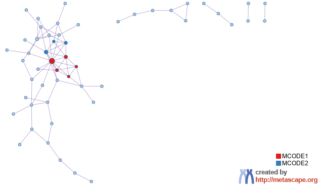 | | 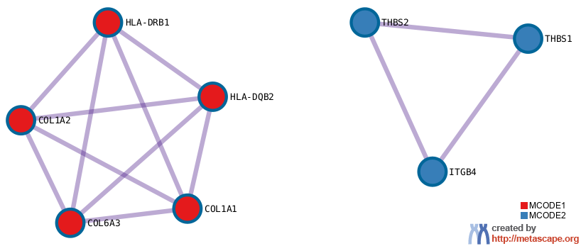 |

| |
|
| GO |
Description |
Log10(P) |
| M5884 |
NABA CORE MATRISOME |
-16.6 |
| R-HSA-1474244 |
Extracellular matrix organization |
-16.1 |
| hsa04512 |
ECM-receptor interaction |
-15.4 |
| |
| Color |
MCODE |
GO |
Description |
Log10(P) |
|
MCODE_1 |
R-HSA-8948216 |
Collagen chain trimerization |
-7.5 |
|
MCODE_1 |
M3005 |
NABA COLLAGENS |
-7.5 |
|
MCODE_1 |
M198 |
PID SYNDECAN 1 PATHWAY |
-7.5 |
|
MCODE_2 |
hsa04512 |
ECM-receptor interaction |
-7.6 |
|
MCODE_2 |
WP306 |
Focal adhesion |
-6.6 |
|
MCODE_2 |
hsa04510 |
Focal adhesion |
-6.5 |
|
Quality Control and Association Analysis
Gene list enrichments are identified in the following ontology categories: COVID, Cell_Type_Signatures, DisGeNET, PaGenBase, TRRUST, Transcription_Factor_Targets. All genes in the genome have been used as the enrichment background. Terms with a p-value < 0.01, a minimum count of 3, and an enrichment factor > 1.5 (the enrichment factor is the ratio between the observed counts and the counts expected by chance) are collected and grouped into clusters based on their membership similarities. The top few enriched clusters (one term per cluster) are shown in the Figure 4-9. The algorithm used here is the same as that is used for pathway and process enrichment analysis.
Figure 4. Summary of enrichment analysis in COVID11.
|
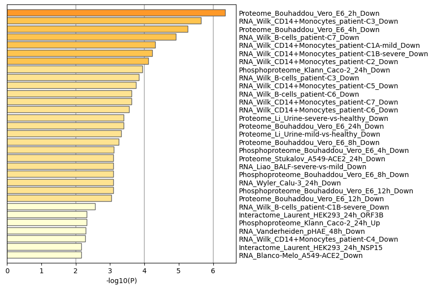
|
|
|
| GO |
Description |
Count |
% |
Log10(P) |
Log10(q) |
| COVID073 |
Proteome_Bouhaddou_Vero_E6_2h_Down |
5 |
4.50 |
-6.40 |
-3.30 |
| COVID251 |
RNA_Wilk_CD14+Monocytes_patient-C3_Down |
5 |
4.50 |
-5.60 |
-2.80 |
| COVID075 |
Proteome_Bouhaddou_Vero_E6_4h_Down |
4 |
3.60 |
-5.30 |
-2.40 |
| COVID350 |
RNA_Wilk_B-cells_patient-C7_Down |
4 |
3.60 |
-4.90 |
-2.20 |
| COVID245 |
RNA_Wilk_CD14+Monocytes_patient-C1A-mild_Down |
4 |
3.60 |
-4.30 |
-1.80 |
| COVID247 |
RNA_Wilk_CD14+Monocytes_patient-C1B-severe_Down |
4 |
3.60 |
-4.20 |
-1.70 |
| COVID249 |
RNA_Wilk_CD14+Monocytes_patient-C2_Down |
4 |
3.60 |
-4.10 |
-1.70 |
| COVID234 |
Phosphoproteome_Klann_Caco-2_24h_Down |
7 |
6.40 |
-3.90 |
-1.50 |
| COVID342 |
RNA_Wilk_B-cells_patient-C3_Down |
3 |
2.70 |
-3.80 |
-1.40 |
| COVID255 |
RNA_Wilk_CD14+Monocytes_patient-C5_Down |
5 |
4.50 |
-3.80 |
-1.40 |
| COVID259 |
RNA_Wilk_CD14+Monocytes_patient-C7_Down |
3 |
2.70 |
-3.60 |
-1.30 |
| COVID348 |
RNA_Wilk_B-cells_patient-C6_Down |
3 |
2.70 |
-3.60 |
-1.30 |
| COVID257 |
RNA_Wilk_CD14+Monocytes_patient-C6_Down |
4 |
3.60 |
-3.60 |
-1.30 |
| COVID205 |
Proteome_Li_Urine-severe-vs-healthy_Down |
5 |
4.50 |
-3.40 |
-1.10 |
| COVID071 |
Proteome_Bouhaddou_Vero_E6_24h_Down |
4 |
3.60 |
-3.40 |
-1.10 |
| COVID207 |
Proteome_Li_Urine-mild-vs-healthy_Down |
4 |
3.60 |
-3.30 |
-1.10 |
| COVID077 |
Proteome_Bouhaddou_Vero_E6_8h_Down |
3 |
2.70 |
-3.30 |
-1.10 |
| COVID063 |
Phosphoproteome_Bouhaddou_Vero_E6_4h_Down |
5 |
4.50 |
-3.10 |
-0.98 |
| COVID134 |
Proteome_Stukalov_A549-ACE2_24h_Down |
6 |
5.50 |
-3.10 |
-0.98 |
| COVID033 |
RNA_Liao_BALF-severe-vs-mild_Down |
6 |
5.50 |
-3.10 |
-0.98 |
|
Figure 5. Summary of enrichment analysis in Cell Type Signatures12.
|
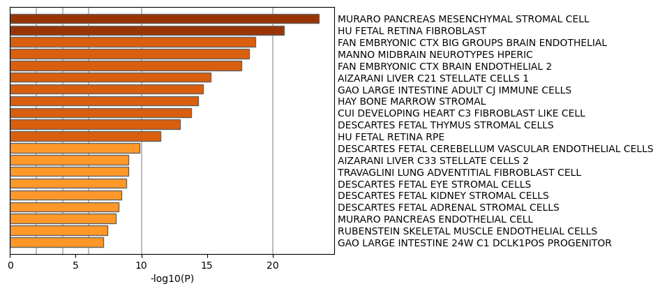
|
|
|
| GO |
Description |
Count |
% |
Log10(P) |
Log10(q) |
| M39175 |
MURARO PANCREAS MESENCHYMAL STROMAL CELL |
30 |
27.00 |
-24.00 |
-19.00 |
| M39264 |
HU FETAL RETINA FIBROBLAST |
23 |
21.00 |
-21.00 |
-17.00 |
| M39018 |
FAN EMBRYONIC CTX BIG GROUPS BRAIN ENDOTHELIAL |
21 |
19.00 |
-19.00 |
-15.00 |
| M39050 |
MANNO MIDBRAIN NEUROTYPES HPERIC |
27 |
25.00 |
-18.00 |
-14.00 |
| M39040 |
FAN EMBRYONIC CTX BRAIN ENDOTHELIAL 2 |
19 |
17.00 |
-18.00 |
-14.00 |
| M39122 |
AIZARANI LIVER C21 STELLATE CELLS 1 |
15 |
14.00 |
-15.00 |
-12.00 |
| M39167 |
GAO LARGE INTESTINE ADULT CJ IMMUNE CELLS |
20 |
18.00 |
-15.00 |
-11.00 |
| M39209 |
HAY BONE MARROW STROMAL |
23 |
21.00 |
-14.00 |
-11.00 |
| M39300 |
CUI DEVELOPING HEART C3 FIBROBLAST LIKE CELL |
12 |
11.00 |
-14.00 |
-10.00 |
| M40313 |
DESCARTES FETAL THYMUS STROMAL CELLS |
12 |
11.00 |
-13.00 |
-9.40 |
| M39271 |
HU FETAL RETINA RPE |
14 |
13.00 |
-11.00 |
-8.00 |
| M40158 |
DESCARTES FETAL CEREBELLUM VASCULAR ENDOTHELIAL CELLS |
17 |
15.00 |
-9.90 |
-6.40 |
| M39132 |
AIZARANI LIVER C33 STELLATE CELLS 2 |
9 |
8.20 |
-9.00 |
-5.70 |
| M41675 |
TRAVAGLINI LUNG ADVENTITIAL FIBROBLAST CELL |
12 |
11.00 |
-9.00 |
-5.70 |
| M40180 |
DESCARTES FETAL EYE STROMAL CELLS |
8 |
7.30 |
-8.80 |
-5.50 |
| M40222 |
DESCARTES FETAL KIDNEY STROMAL CELLS |
9 |
8.20 |
-8.50 |
-5.20 |
| M40151 |
DESCARTES FETAL ADRENAL STROMAL CELLS |
9 |
8.20 |
-8.30 |
-5.00 |
| M39176 |
MURARO PANCREAS ENDOTHELIAL CELL |
12 |
11.00 |
-8.10 |
-4.80 |
| M41743 |
RUBENSTEIN SKELETAL MUSCLE ENDOTHELIAL CELLS |
8 |
7.30 |
-7.40 |
-4.20 |
| M39152 |
GAO LARGE INTESTINE 24W C1 DCLK1POS PROGENITOR |
7 |
6.40 |
-7.10 |
-3.90 |
|
Figure 6. Summary of enrichment analysis in DisGeNET13.
|
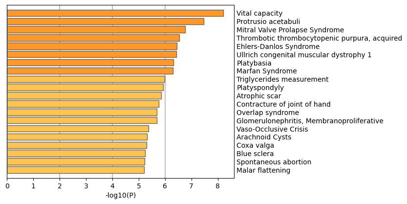
|
|
|
| GO |
Description |
Count |
% |
Log10(P) |
Log10(q) |
| C0042834 |
Vital capacity |
13 |
12.00 |
-8.20 |
-5.00 |
| C0409495 |
Protrusio acetabuli |
4 |
3.60 |
-7.50 |
-4.30 |
| C0026267 |
Mitral Valve Prolapse Syndrome |
7 |
6.40 |
-6.80 |
-3.60 |
| C2584778 |
Thrombotic thrombocytopenic purpura, acquired |
4 |
3.60 |
-6.50 |
-3.50 |
| C0013720 |
Ehlers-Danlos Syndrome |
6 |
5.50 |
-6.40 |
-3.40 |
| C0410179 |
Ullrich congenital muscular dystrophy 1 |
4 |
3.60 |
-6.40 |
-3.40 |
| C0032209 |
Platybasia |
4 |
3.60 |
-6.30 |
-3.30 |
| C0024796 |
Marfan Syndrome |
7 |
6.40 |
-6.30 |
-3.30 |
| C0202236 |
Triglycerides measurement |
12 |
11.00 |
-6.00 |
-3.00 |
| C1844704 |
Platyspondyly |
6 |
5.50 |
-5.90 |
-3.00 |
| C0162154 |
Atrophic scar |
4 |
3.60 |
-5.90 |
-2.90 |
| C0158113 |
Contracture of joint of hand |
5 |
4.50 |
-5.80 |
-2.90 |
| C0017662 |
Glomerulonephritis, Membranoproliferative |
5 |
4.50 |
-5.70 |
-2.80 |
| C0410000 |
Overlap syndrome |
5 |
4.50 |
-5.70 |
-2.80 |
| C0750151 |
Vaso-Occlusive Crisis |
4 |
3.60 |
-5.40 |
-2.50 |
| C0078981 |
Arachnoid Cysts |
4 |
3.60 |
-5.30 |
-2.50 |
| C0239137 |
Coxa valga |
5 |
4.50 |
-5.30 |
-2.50 |
| C0542514 |
Blue sclera |
5 |
4.50 |
-5.20 |
-2.40 |
| C0000786 |
Spontaneous abortion |
7 |
6.40 |
-5.20 |
-2.40 |
| C1858085 |
Malar flattening |
7 |
6.40 |
-5.20 |
-2.40 |
|
Figure 7. Summary of enrichment analysis in PaGenBase14.
|
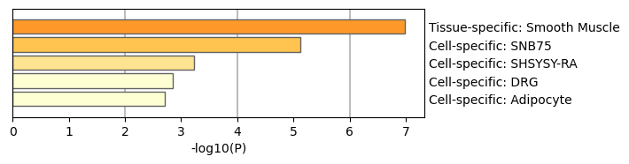
|
|
|
| GO |
Description |
Count |
% |
Log10(P) |
Log10(q) |
| PGB:00011 |
Tissue-specific: Smooth Muscle |
7 |
6.40 |
-7.00 |
-3.80 |
| PGB:00095 |
Cell-specific: SNB75 |
3 |
2.70 |
-5.10 |
-2.30 |
| PGB:00126 |
Cell-specific: SHSYSY-RA |
3 |
2.70 |
-3.20 |
-1.00 |
| PGB:00065 |
Cell-specific: DRG |
7 |
6.40 |
-2.90 |
-0.80 |
| PGB:00080 |
Cell-specific: Adipocyte |
4 |
3.60 |
-2.70 |
-0.69 |
|
Figure 8. Summary of enrichment analysis in TRRUST.
|
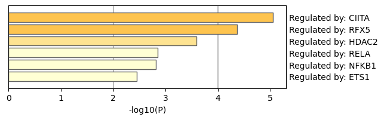
|
|
|
| GO |
Description |
Count |
% |
Log10(P) |
Log10(q) |
| TRR00117 |
Regulated by: CIITA |
4 |
3.60 |
-5.10 |
-2.30 |
| TRR01165 |
Regulated by: RFX5 |
3 |
2.70 |
-4.40 |
-1.80 |
| TRR00469 |
Regulated by: HDAC2 |
3 |
2.70 |
-3.60 |
-1.30 |
| TRR01158 |
Regulated by: RELA |
6 |
5.50 |
-2.90 |
-0.79 |
| TRR00875 |
Regulated by: NFKB1 |
6 |
5.50 |
-2.80 |
-0.77 |
| TRR00280 |
Regulated by: ETS1 |
3 |
2.70 |
-2.40 |
-0.52 |
|
Figure 9. Summary of enrichment analysis in Transcription Factor Targets.
|
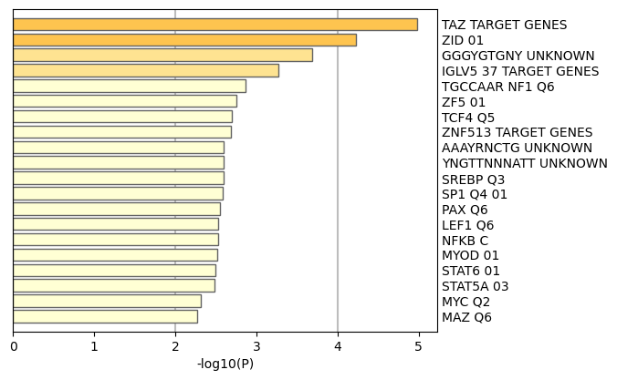
|
|
|
| GO |
Description |
Count |
% |
Log10(P) |
Log10(q) |
| M30192 |
TAZ TARGET GENES |
10 |
9.10 |
-5.00 |
-2.30 |
| M8684 |
ZID 01 |
7 |
6.40 |
-4.20 |
-1.70 |
| M9645 |
GGGYGTGNY UNKNOWN |
10 |
9.10 |
-3.70 |
-1.30 |
| M30025 |
IGLV5 37 TARGET GENES |
9 |
8.20 |
-3.30 |
-1.10 |
| M572 |
TGCCAAR NF1 Q6 |
9 |
8.20 |
-2.90 |
-0.80 |
| M1793 |
ZF5 01 |
5 |
4.50 |
-2.80 |
-0.72 |
| M1224 |
TCF4 Q5 |
5 |
4.50 |
-2.70 |
-0.68 |
| M30337 |
ZNF513 TARGET GENES |
9 |
8.20 |
-2.70 |
-0.68 |
| M11607 |
AAAYRNCTG UNKNOWN |
6 |
5.50 |
-2.60 |
-0.60 |
| M16291 |
YNGTTNNNATT UNKNOWN |
6 |
5.50 |
-2.60 |
-0.60 |
| M2814 |
SREBP Q3 |
5 |
4.50 |
-2.60 |
-0.60 |
| M9300 |
SP1 Q4 01 |
5 |
4.50 |
-2.60 |
-0.60 |
| M9426 |
PAX Q6 |
5 |
4.50 |
-2.50 |
-0.57 |
| M14944 |
LEF1 Q6 |
5 |
4.50 |
-2.50 |
-0.56 |
| M12240 |
NFKB C |
5 |
4.50 |
-2.50 |
-0.56 |
| M12599 |
MYOD 01 |
5 |
4.50 |
-2.50 |
-0.56 |
| M2490 |
STAT6 01 |
5 |
4.50 |
-2.50 |
-0.55 |
| M8720 |
STAT5A 03 |
5 |
4.50 |
-2.50 |
-0.54 |
| M17805 |
MYC Q2 |
4 |
3.60 |
-2.30 |
-0.43 |
| M11022 |
MAZ Q6 |
4 |
3.60 |
-2.30 |
-0.40 |
|
Reference
- Zhou et al., Metascape provides a biologist-oriented resource for the analysis of systems-level datasets. Nature Communications (2019) 10(1):1523.
- Zar, J.H. Biostatistical Analysis 1999 4th edn., NJ Prentice Hall, pp. 523
- Hochberg Y., Benjamini Y. More powerful procedures for multiple significance testing. Statistics in Medicine (1990) 9:811-818.
- Cohen, J. A coefficient of agreement for nominal scales. Educ. Psychol. Meas. (1960) 20:27-46.
- Shannon P. et al., Cytoscape: a software environment for integrated models of biomolecular interaction networks. Genome Res (2003) 11:2498-2504.
- Szklarczyk D. et al. STRING v11: protein-protein association networks with increased coverage, supporting functional discovery in genome-wide experimental datasets. Nucleic Acids Res. (2019) 47:D607-613.
- Stark C. et al. BioGRID: a general repository for interaction datasets. Nucleic Acids Res. (2006) 34:D535-539.
- Turei D. et al. A scored human protein-protein interaction network to catalyze genomic interpretation. Nat. Methods. (2016) 13:966-967.
- Li T. et al. A scored human protein-protein interaction network to catalyze genomic interpretation. Nat. Methods. (2017) 14:61-64.
- Bader, G.D. et al. An automated method for finding molecular complexes in large protein interaction networks. BMC bioinformatics (2003) 4:2.
- https://metascape.org/COVID.
- Subramanian A, et al. Gene set enrichment analysis: A knowledge-based approach for interpreting genome-wide expression profiles. Proc Natl Acad Sci U S A 102, 15545-15550 (2005).
- Pinero J, et al. DisGeNET: a comprehensive platform integrating information on human disease-associated genes and variants. Nucleic acids research 45, D833-D839 (2017).
- Pan JB, et al. PaGenBase: a pattern gene database for the global and dynamic understanding of gene function. PLoS One 8, e80747 (2013).